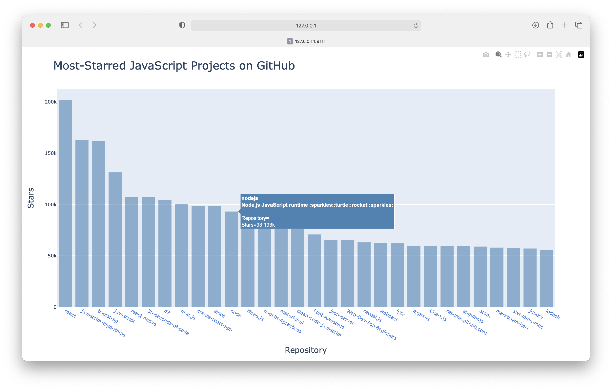

Solutions - Chapter 17
17-1: Other Languages
Modify the API call in python_repos.py so it generates a chart showing the most popular projects in other languages. Try languages such as JavaScript, Ruby, C, Java, Perl, Haskell, and Go.
import requests
import plotly.express as px
# Make an API call and check the response.
url = "https://api.github.com/search/repositories"
url += "?q=language:javascript+sort:stars+stars:>10000"
headers = {"Accept": "application/vnd.github.v3+json"}
r = requests.get(url, headers=headers)
print(f"Status code: {r.status_code}")
# Process overall results.
response_dict = r.json()
print(f"Complete results: {not response_dict['incomplete_results']}")
# Process repository information.
repo_dicts = response_dict['items']
repo_links, stars, hover_texts = [], [], []
for repo_dict in repo_dicts:
# Turn repo names into active links.
repo_name = repo_dict['name']
repo_url = repo_dict['html_url']
repo_link = f"<a href='{repo_url}'>{repo_name}</a>"
repo_links.append(repo_link)
stars.append(repo_dict['stargazers_count'])
# Build hover texts.
owner = repo_dict['owner']['login']
description = repo_dict['description']
hover_text = f"{owner}<br />{description}"
hover_texts.append(hover_text)
# Make visualization.
title = "Most-Starred JavaScript Projects on GitHub"
labels = {'x': 'Repository', 'y': 'Stars'}
fig = px.bar(x=repo_links, y=stars, title=title, labels=labels,
hover_name=hover_texts)
fig.update_layout(title_font_size=28, xaxis_title_font_size=20,
yaxis_title_font_size=20)
fig.update_traces(marker_color='SteelBlue', marker_opacity=0.6)
fig.show()
Output:

17-2: Active Discussions
Using the data from hn_submissions.py, make a bar chart showing the most active discussions currently happening on Hacker News. The height of each bar should correspond to the number of comments each submission has. The label for each bar should include the submission’s title and act as a link to the discussion page for that submission. If you get a KeyError when creating a chart, use a try-except block to skip over the promotional posts.
from operator import itemgetter
import requests
import plotly.express as px
# Make an API call and check the response.
url = 'https://hacker-news.firebaseio.com/v0/topstories.json'
r = requests.get(url)
print(f"Status code: {r.status_code}")
# Process information about each submission.
submission_ids = r.json()
submission_dicts = []
for submission_id in submission_ids[:20]:
# Make a new API call for each submission.
url = f"https://hacker-news.firebaseio.com/v0/item/{submission_id}.json"
r = requests.get(url)
print(f"id: {submission_id}\tstatus: {r.status_code}")
response_dict = r.json()
# Build a dictionary for each article.
try:
submission_dict = {
'title': response_dict['title'],
'hn_link': f"https://news.ycombinator.com/item?id={submission_id}",
'comments': response_dict['descendants'],
}
except KeyError:
# This is a special YC post with comments disabled.
continue
else:
submission_dicts.append(submission_dict)
submission_dicts = sorted(submission_dicts, key=itemgetter('comments'),
reverse=True)
# Process data for plotting.
article_links, comment_counts, hover_texts = [], [], []
for submission_dict in submission_dicts:
# Shorten long article titles.
title = submission_dict['title'][:30]
discussion_link = submission_dict['hn_link']
article_link = f'<a href="{discussion_link}"">{title}</a>'
comment_count = submission_dict['comments']
article_links.append(article_link)
comment_counts.append(comment_count)
# Show the full title on hover.
hover_texts.append(submission_dict['title'])
# Make visualization.
title = "Most active discussions on Hacker News"
labels = {'x': 'Article', 'y': 'Comment count'}
fig = px.bar(x=article_links, y=comment_counts, title=title, labels=labels,
hover_name=hover_texts)
fig.update_layout(title_font_size=28, xaxis_title_font_size=20,
yaxis_title_font_size=20)
fig.update_traces(marker_color='SteelBlue', marker_opacity=0.6)
fig.show()
Output:

17-3 Testing python_repos.py
In python_repos.py, we printed the value of status_code to make sure the API call was successful. Write a program called test_python_repos.py that uses pytest to assert that the value of status_code
is 200. Figure out some other assertions you can make: for example, that the number of items returned is expected and that the total number of repositories is greater than a certain amount.
Note: It's much easier to test a program that's broken up into functions or classes. So this solution actually has three parts: a version of python_repos.py that uses functions to do its work, a simpler test file, and a test file that uses fixtures.
import requests
def get_repos_info():
"""Get information about Python repositories on GitHub."""
# Make an API call and check the response.
url = "https://api.github.com/search/repositories"
url += "?q=language:python+sort:stars+stars:>10000"
headers = {"Accept": "application/vnd.github.v3+json"}
r = requests.get(url, headers=headers)
print(f"Status code: {r.status_code}")
return r
def get_response_dict(response):
"""Convert the response object to a dictionary."""
response_dict = response.json()
return response_dict
def show_repos_info(response_dict):
"""Show information about the returned repositories."""
print(f"Total repositories: {response_dict['total_count']}")
print(f"Complete results: {not response_dict['incomplete_results']}")
def get_repo_dicts(response_dict):
"""Return list of dictionaries, one for each repository."""
repo_dicts = response_dict['items']
return repo_dicts
def show_repo_dicts_info(repo_dicts):
"""Summarize information about repositories."""
print(f"Repositories returned: {len(repo_dicts)}")
print("\nSelected information about each repository:")
for repo_dict in repo_dicts:
print("\nSelected information about first repository:")
print(f"Name: {repo_dict['name']}")
print(f"Owner: {repo_dict['owner']['login']}")
print(f"Stars: {repo_dict['stargazers_count']}")
print(f"Repository: {repo_dict['html_url']}")
print(f"Created: {repo_dict['created_at']}")
print(f"Updated: {repo_dict['updated_at']}")
print(f"Description: {repo_dict['description']}")
response = get_repos_info()
response_dict = get_response_dict(response)
show_repos_info(response_dict)
repo_dicts = get_repo_dicts(response_dict)
show_repo_dicts_info(repo_dicts)
Output:
Status code: 200
Total repositories: 307
Complete results: True
Repositories returned: 30
Selected information about each repository:
Selected information about first repository:
Name: public-apis
Owner: public-apis
Stars: 227342
Repository: https://github.com/public-apis/public-apis
Created: 2016-03-20T23:49:42Z
Updated: 2023-02-08T01:53:56Z
Description: A collective list of free APIs
...
Here's a version of test_python_repos.py that does not use fixtures:
import pytest
from python_repos_tested import get_repos_info, get_response_dict, get_repo_dicts
def test_response_status_code():
"""Test that a response has a successful status code."""
r = get_repos_info()
assert r.status_code == 200
def test_response_dict():
"""Verify an appropriate number of repositories are represented,
and the results are complete.
"""
r = get_repos_info()
response_dict = get_response_dict(r)
total_count = response_dict['total_count']
complete_results = not response_dict['incomplete_results']
assert total_count > 240
assert complete_results
def test_repo_dicts():
"""Verify the results in repo_dicts are correct."""
r = get_repos_info()
response_dict = get_response_dict(r)
repo_dicts = get_repo_dicts(response_dict)
assert len(repo_dicts) == 30
# Check that all repos returned have over 10k stars.
for repo_dict in repo_dicts:
assert repo_dict['stargazers_count'] > 10_000
Output:
$ pytest test_python_repos.py
==================== test session starts ====================
platform darwin -- Python 3.10.0, pytest-7.1.2, pluggy-1.0.0
rootdir: /Users/eric/pcc_3e/solution_files/chapter_17
collected 3 items
test_python_repos.py ... [100%]
==================== 3 passed in 6.42s ====================
This is a reasonable first pass at writing these three tests. But you might notice that every test function needs to call get_repos_info(), which means there's one API call for every single test function. That would quickly get out of hand.
Here's the same three tests, using a fixture to make sure that get_repos_info() is only called once for the entire test run:
import pytest
from python_repos_tested import get_repos_info, get_response_dict, get_repo_dicts
@pytest.fixture
def response():
"""Get a response object."""
r = get_repos_info()
return r
def test_response_status_code(response):
"""Test that a response has a successful status code."""
assert response.status_code == 200
def test_response_dict(response):
"""Verify an appropriate number of repositories are represented,
and the results are complete.
"""
response_dict = get_response_dict(response)
total_count = response_dict['total_count']
complete_results = not response_dict['incomplete_results']
assert total_count > 240
assert complete_results
def test_repo_dicts(response):
"""Verify the results in repo_dicts are correct."""
response_dict = get_response_dict(response)
repo_dicts = get_repo_dicts(response_dict)
assert len(repo_dicts) == 30
# Check that all repos returned have over 10k stars.
for repo_dict in repo_dicts:
assert repo_dict['stargazers_count'] > 10_000
Output:
$ pytest test_python_repos_with_fixture.py
==================== test session starts ====================
platform darwin -- Python 3.10.0, pytest-7.1.2, pluggy-1.0.0
rootdir: /Users/eric/pcc_3e/solution_files/chapter_17
collected 3 items
test_python_repos_with_fixture.py ... [100%]
==================== 3 passed in 7.46s ====================
Note: The times reported by pytest are not representative of the entire time it takes to run the test suite. Some of the time that's spent waiting for network calls is not counted by pytest. If you time these two test runs with a stopwatch or another non-pytest timer, you'll find that the file using a fixture runs significantly faster than the file without a fixture. This difference would become even more significant as the number of test functions grows.